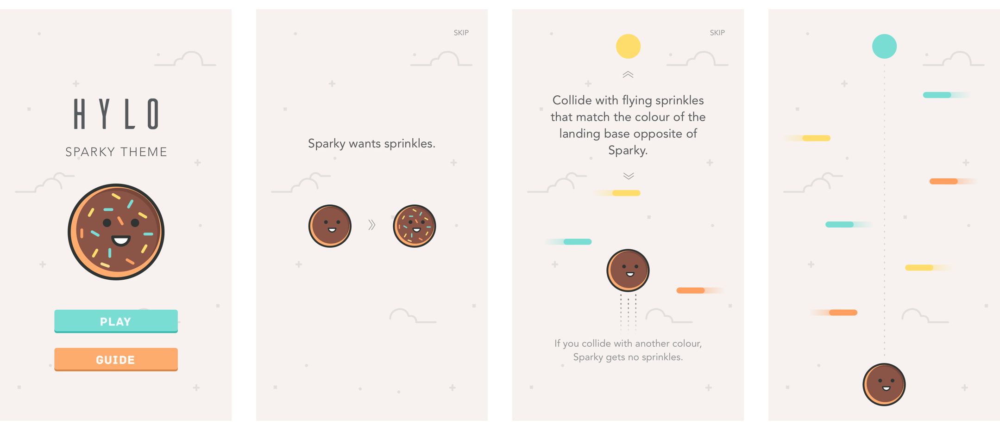

Product Designer / Lead Developer
 A one touch game of highs and lows.
A one touch game of highs and lows.
HYLO is a one to two person timing based mobile game designed to invoke feelings of zen and stress in tandem. In addition to designing and fully developing the game concept in 24 hours; my team and I created a business plan and monitization strategy for the launch of HYLO. The extra mile won us top prize at the University of Waterloo Game Design Camp.
Conceptualization
Researched and conceptualized the game concept and visual style. Scraped app store comments to gather user feedback on similar titles.
Design
Designed the overall flow, interface, and mechanics of the mobile game. collaborated with visual designers on art direction and style for multiple versions of HYLO.
Execution
Coded and implemetned the game for large format displays and Android devices using Java, Android SDK, and Processing. iOS version soon to be released in tandem with Android.
You can play the experiemental web version here: HYLO